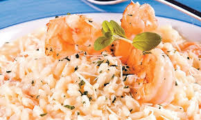

Risoto de camarão

Ingredientes:
- 500 g de camarão médio
- 1 1/2 xícara de arroz carnaroli ou arbóreo
- 1 xícara de vinho branco seco
- 100 g de champignon (opcional) cortado em lâminas
- 3 tomates (italiano) grandes, maduros e picados
- 2 cebolas pequenas raladas
- 3 dentes de alho amassados
- 1 talo de salsão picadinho
- 1 caldo de camarão (ou de peixe ou de legumes)
- 100 g de creme de leite
- Sal, parmesão, curry, salsinha, folha de louro e azeite a gosto
- Espremer um limão nos camarões e deixar descansando enquanto você rala as cebolas, pica os tomates e salsão, amassa os alhos.
- Refogue metade do alho, uma das cebolas, 1 folha de louro e o talo de salsão no azeite.
- Depois acrescente os tomates e refogue até formar um molho.
- Pingue água só quando começar a grudar no fundo da panela.
- Tempere suavemente.
- Enxague os camarões, escorra-os e jogue-os sobre uma frigideira antiaderente (pode ser uma wok ou paellera) pré-aquecida com azeite e alho picado.
- Salpique sobre eles sal e curry. Acrescente os champignons. Após grelhados, despeje o molho de tomate já pronto e refogue mais um pouco.
- Reserve.
- Esse prato tem que fazer por etapa, pois quando começar preparar o arroz, não se pode parar de mexer.
- Coloque cerca de 1 litro de água para ferver com o caldo de camarão.
- Coloque o restante da cebola e 1 folha de louro noutra panela e refogue com azeite. Despeje o arroz sem lavá-lo e mexa.
- Depois coloque o vinho, sem parar de mexer. Quando evaporar o álcool, adicione a água fervente com o caldo, concha a concha, sem para de mexer, adicionando mais quando começar a secar.
- Se a água fervida for pouca, é só aquecer mais (sem caldo), lembrando que o arroz arbóreo ou carnaroli cozinha em aproximadamente 17 minutos e rende mais que o arroz comum.
- Vale lembrar, ainda, que risto se faz em fogo alto.
- Após cozido, despeje-o na frigideira dos camarões, misturando delicadamente. Experimente o tempero e corrija o sal se precisar. Deixe terminando de cozinhar ou secar mais um pouco, caso necessário.
- Desligue o fogo e acrescente o creme de leite, o parmesão e a salsinha picadinha. Mexa delicadamente, tampe a panela e espere uns 5 minutos para agregar o sabor. Sirva quente.